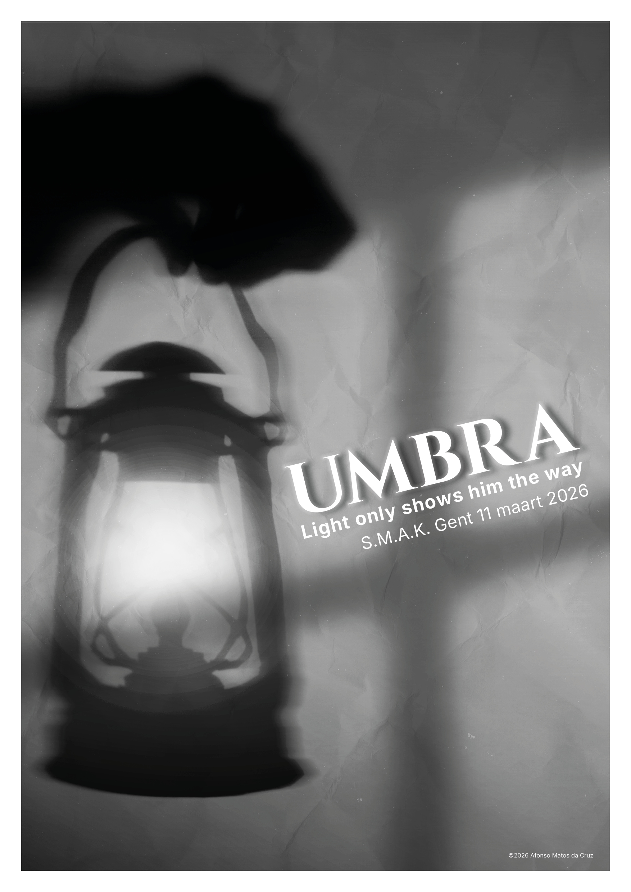
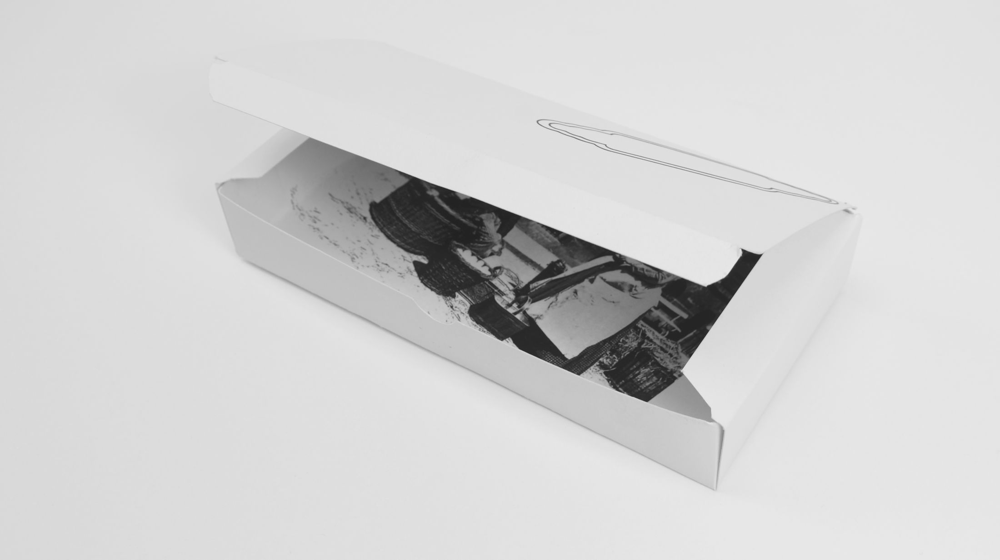
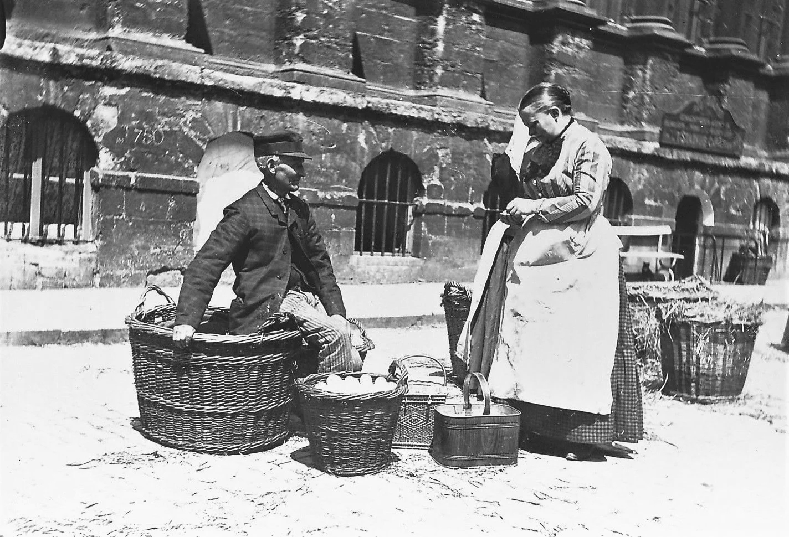
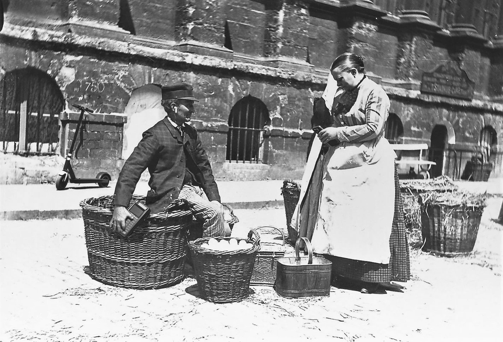
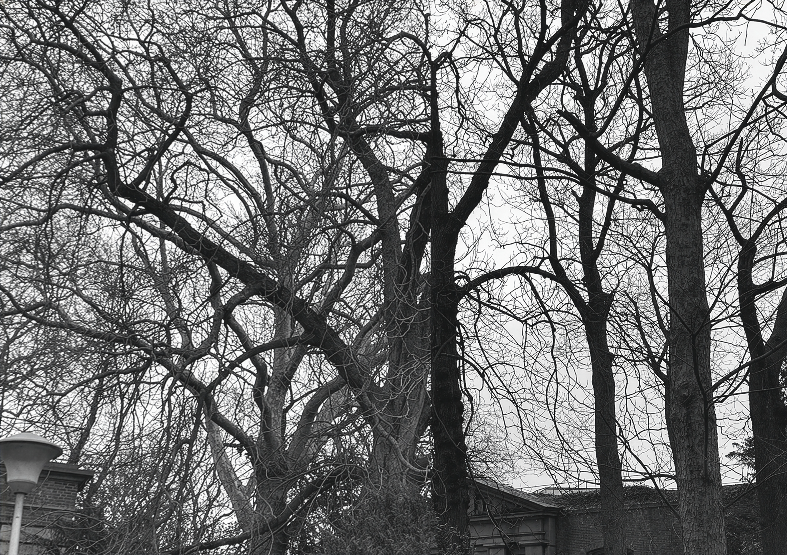
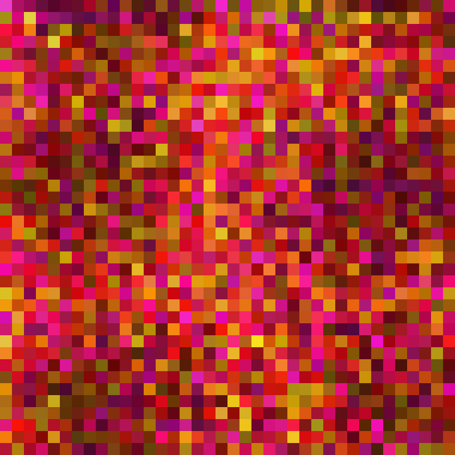
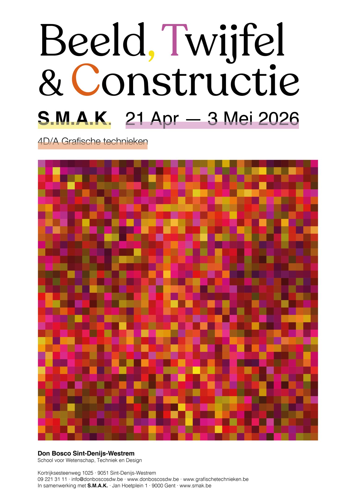
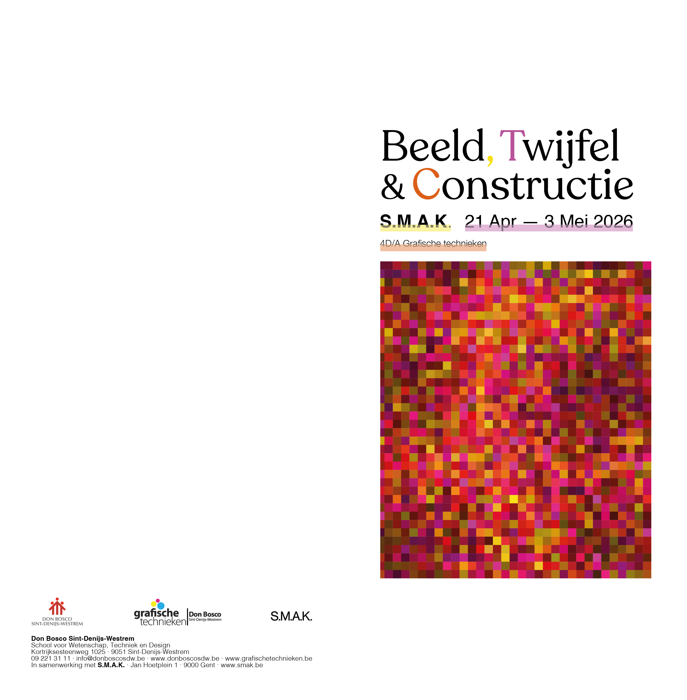
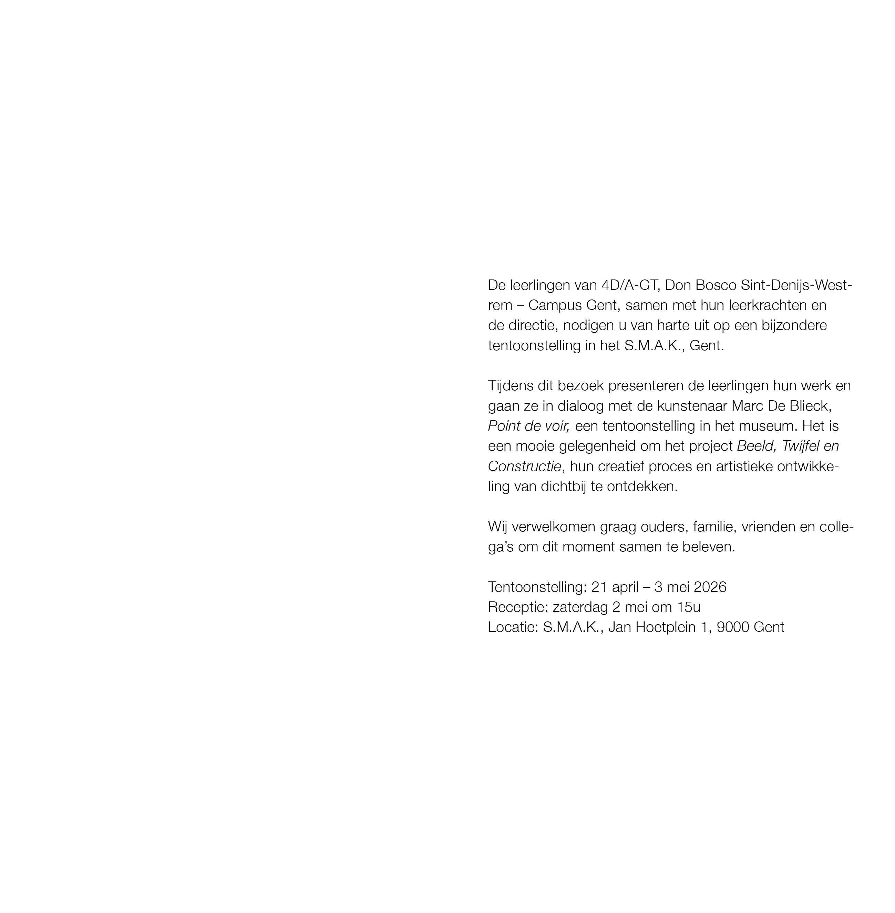

Schaduwaffiche
Schaduw en Suggestie
In deze opdracht onderzoeken we hoe we met licht en donker een verhaal kunnen vertellen. Geïnspireerd door 'de grot van Plato' leerden we hoe schaduwen een beeld kunnen vormen of juist verwarring kunnen zaaien. We ontwierpen een affiche waarbij we spelen met wat je wel en niet ziet, om zo de nieuwsgierigheid van de kijker te prikkelen voor een tentoonstelling in het S.M.A.K.

Schaduwaffiche animatie
Van affiche naar bewegend beeld
Voor deze opdracht maakten we de stap van een stilstaande poster naar een 'Reel' of animatie. We leerden hoe we de sfeer van schaduw en suggestie kunnen vertalen naar beweging. Door subtiele animaties toe te voegen aan het licht en de schaduwen, komt de grafische constructie echt tot leven op een scherm.
Archiefdoos
Het beeld als archiefobject
Een archiefdoos is meer dan een verpakking; het is een object dat iets vertelt over de geschiedenis die erin zit. We ontwierpen de doos en het label met aandacht voor lay-out en typografie, zodat het object perfect past in de context van een historisch stadsarchief.


Archiefdoosfoto met hedendaagse aanpassingen
Historisch beeld als constructie
Hier leerden we dat beelden vaak 'geconstrueerd' zijn. We bewerkten een oude foto uit Gent door er moderne elementen aan toe te voegen via Photoshop. Hiermee laten we zien hoe techniek de betekenis van een foto kan veranderen.

Schimmenanimatie
The Real Behind The Perfect Picture
Deze video-opdracht draait om de vertaling van de werkelijkheid naar een gemaakt beeld. Met stop-motion en schimmenspel vertellen we een kort verhaal over sociale media en identiteit.
Organische Constructie
Kadrering als keuze
Geïnspireerd door het fotografische werk van Marc De Blieck zocht ik naar structuren die de grens tonen tussen registratie en compositie. De kale bomen in dit zwart-witbeeld lijken toevallig gevangen — maar elk element is een keuze: het standpunt, het formaat, het moment, wat net buiten het kader valt. De zwart-witbewerking versterkt het grafische karakter van de takken en maakt de complexiteit van de organische structuur zichtbaar als bijna-abstract patroon. Het beeld stelt de vraag die centraal staat in het hele project: fotografeer ik wat er is, of construeer ik wat de kijker ziet?

Pixelbeeld
Van algoritme naar compositie
Het beeld vertrok niet vanuit een idee of schets, maar vanuit getallen. Via een online pixeltool werd een basiskleur (RGB) ingevoerd waarna het algoritme een rasterstructuur genereerde. In Adobe Illustrator werden kleurstalen uit het pixelpatroon gehaald en gecombineerd met een gegenereerde cirkelstructuur. Daarna begon het echte ontwerpen: cirkels verplaatsen, vormen schalen, leegte bewust laten bestaan, kleuren toekennen. Het algoritme leverde het materiaal — de mens maakte de compositie. Het resultaat is een autonoom vierkant beeld van 15×15 cm, gepresenteerd op een staand formaat van 20×32 cm bepaald door de Gulden Snede.

Affiche S.M.A.K. Beeld, twijfel & constructie
Algoritme en menselijke creativiteit
Geïnspireerd door een expo in het S.M.A.K. gingen we aan de slag met algoritmes. We leerden hoe data en systemen omgezet kunnen worden naar kleur, waarde en compositie.

Uitnodiging S.M.A.K. Beeld, twijfel & constructie
Van algoritme naar grafisch product
De laatste stap in het project was het vertalen van de complexe pixelstructuren naar een tastbaar product: een uitnodiging.

